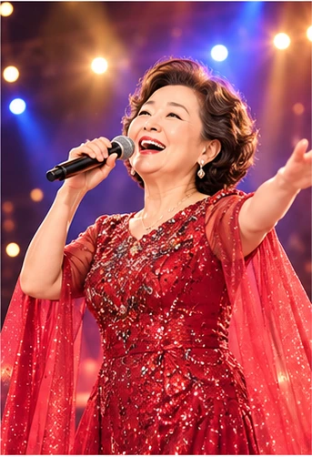
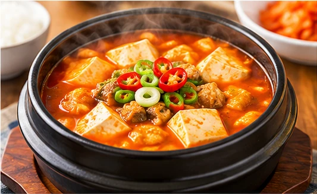
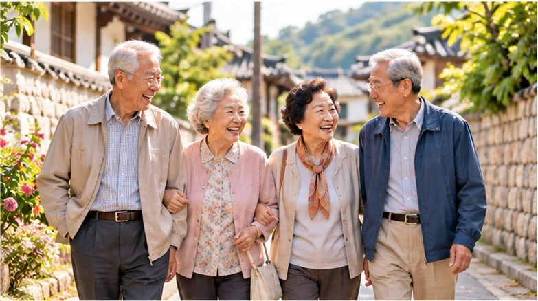

✨ 누구나 쉽게 즐기는 AI 활동
AI로 만드는 나의 이야기
원하는 활동을 눌러 시작하세요. 마지막에는 본인 사진과 함께 프롬프트를 ChatGPT에 넣어 나만의 이미지를 만들어요!
① 활동 내용 고르기② 프롬프트 만들기③ 본인 사진 준비하기④ ChatGPT에서 이미지 만들기
오늘 어떤 활동을 해볼까요?
한 가지를 골라도 좋고, 다른 활동에도 다시 도전할 수 있어요.

🌈 지금도 꿈꿀 수 있어요
AI로 이루는 나의 꿈
젊었을 때의 꿈과 지금 해보고 싶은 일을 골라 꿈을 이루는 나의 모습을 이미지로 만나보세요.
나의 꿈 만들기→

🍳 건강한 식생활
AI 건강 요리북
좋아하는 식재료와 요리 방법을 골라 나만의 건강 요리 이미지를 만들어 보세요.
요리북 만들기→

🏡 함께 살아가는 마을
치매보듬마을 포스터
이웃과 함께 살아가는 따뜻한 마을의 모습과 내가 하고 싶은 활동을 골라보세요.
보듬마을 만들기→
💗 건강한 오늘
치매예방 포스터
걷기, 사람 만나기, 취미생활 등 건강한 생활 습관을 골라 나만의 포스터를 완성해요.
예방 포스터 만들기→